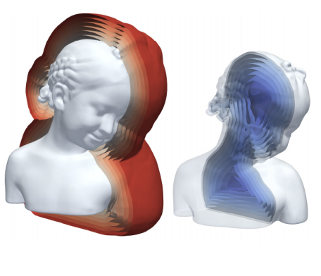
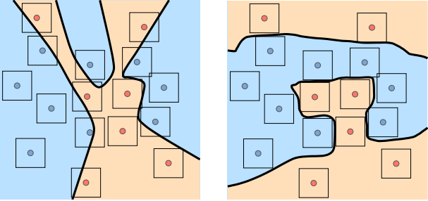
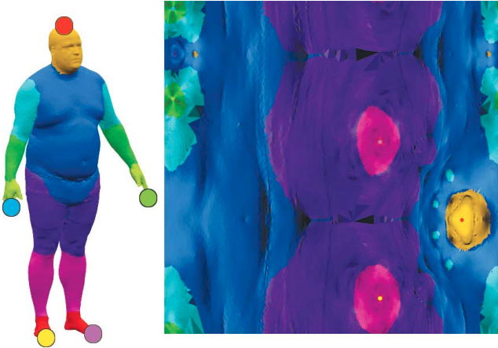
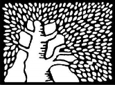

|
I am a Phd student at the Weizmann Institute of Science, advised by Prof. Michal Irani. I work on computer vision and machine learning. I did my Msc. in theoretical astrophysics, advised by Prof. Boaz Katz, and worked with Prof. Yaron Lipman on Geometric Deep Learning. I received my BSc. in computer science and physics from the Technion (Lapidim excellence program alumnus) Email / Google Scholar / GitHub / LinkedIn / Twitter |
{kind=link}
|
|

|
Niv Haim*, Ben Finestein*, Niv Granot, Assaf Shocher, Shai Bagon, Tali Dekel, Michal Irani Technical Report, 2021 Most advanced video generation and manipulation methods train on a large collection of videos. As such, they are restricted to the types of video dynamics they train on. To overcome this limitation, GANs trained on a single video were recently proposed. While these provide more flexibility to a wide variety of video dynamics, they require days to train on a single tiny input video, rendering them impractical. In this paper we present a fast and practical method for video generation and manipulation from a single natural video, which generates diverse high-quality video outputs within seconds (for benchmark videos). Our method can be further applied to full-HD video clips within minutes. Our approach is inspired by a recent advanced patch-nearest-neighbor based approach [Granot et al., 2021], which was shown to significantly outperform single-image GANs, both in run-time and in visual quality. Here we generalize this approach from images to videos, by casting classical space-time patch-based methods as a new generative video model. We adapt the generative image patch nearest neighbor approach to efficiently cope with the huge number of space-time patches in a single video. Our method generates more realistic and higher quality results than single-video GANs (confirmed by quantitative and qualitative evaluations). Moreover, it is disproportionally faster (runtime reduced from several days to seconds). Other than diverse video generation, we demonstrate several other challenging video applications, including spatio-temporal video retargeting (e.g., video extension & video summarization), video structural analogies and conditional video-inpainting.
|
|
|
Assaf Shocher*, Ben Finestein*, Niv Haim*, Michal Irani Technical Report, 2020 A basic operation in Convolutional Neural Networks (CNNs) is spatial resizing of feature maps. This is done either by strided convolution (donwscaling) or transposed convolution (upscaling). Such operations are limited to a fixed filter moving at predetermined integer steps (strides). Spatial sizes of consecutive layers are related by integer scale factors, predetermined at architectural design, and remain fixed throughout training and inference time. We propose a generalization of the common Conv-layer, from a discrete layer to a Continuous Convolution (CC) Layer. CC Layers naturally extend Conv-layers by representing the filter as a learned continuous function over sub-pixel coordinates. This allows learnable and principled resizing of feature maps, to any size, dynamically and consistently across scales. Once trained, the CC layer can be used to output any scale/size chosen at inference time. The scale can be non-integer and differ between the axes. CC gives rise to new freedoms for architectural design, such as dynamic layer shapes at inference time, or gradual architectures where the size changes by a small factor at each layer. This gives rise to many desired CNN properties, new architectural design capabilities, and useful applications. We further show that current Conv-layers suffer from inherent misalignments, which are ameliorated by CC layers.
Learning continuous convolution kernels improve translation equivariance and allow test time scales augmentations |
|  |
Amos Gropp, Lior Yariv, Niv Haim, Matan Atzmon, Yaron Lipman ICML, 2020 Representing shapes as level sets of neural networks has been recently proved to be useful for different shape analysis and reconstruction tasks. So far, such representations were computed using either: (i) pre-computed implicit shape representations; or (ii) loss functions explicitly defined over the neural level sets. In this paper we offer a new paradigm for computing high fidelity implicit neural representations directly from raw data (i.e., point clouds, with or without normal information). We observe that a rather simple loss function, encouraging the neural network to vanish on the input point cloud and to have a unit norm gradient, possesses an implicit geometric regularization property that favors smooth and natural zero level set surfaces, avoiding bad zero-loss solutions. We provide a theoretical analysis of this property for the linear case, and show that, in practice, our method leads to state of the art implicit neural representations with higher level-of-details and fidelity compared to previous methods.
Using an "Eikonal regularization" term with implicit neural representation works surprisingly well for modelling complex surfaces |
|  |
Matan Atzmon, Niv Haim, Lior Yariv, Ofer Israelov, Haggai Maron, Yaron Lipman NeurIPS, 2019 The level sets of neural networks represent fundamental properties such as decision boundaries of classifiers and are used to model non-linear manifold data such as curves and surfaces. Thus, methods for controlling the neural level sets could find many applications in machine learning. In this paper we present a simple and scalable approach to directly control level sets of a deep neural network. Our method consists of two parts: (i) sampling of the neural level sets, and (ii) relating the samples' positions to the network parameters. The latter is achieved by a sample network that is constructed by adding a single fixed linear layer to the original network. In turn, the sample network can be used to incorporate the level set samples into a loss function of interest. We have tested our method on three different learning tasks: improving generalization to unseen data, training networks robust to adversarial attacks, and curve and surface reconstruction from point clouds. For surface reconstruction, we produce high fidelity surfaces directly from raw 3D point clouds. When training small to medium networks to be robust to adversarial attacks we obtain robust accuracy comparable to state-of-the-art methods.
Making input points differentiable (w.r.t model parameters), and using it for shape modelling, improved robustness to adversrial examples and more |
|  |
Niv Haim*, Nimrod Segol*, Heli Ben-Hamu, Haggai Maron, Yaron Lipman ICCV, 2019 Developing deep learning techniques for geometric data is an active and fruitful research area. This paper tackles the problem of sphere-type surface learning by developing a novel surface-to-image representation. Using this representation we are able to quickly adapt successful CNN models to the surface setting. The surface-image representation is based on a covering map from the image domain to the surface. Namely, the map wraps around the surface several times, making sure that every part of the surface is well represented in the image. Differently from previous surface-to-image representations, we provide a low distortion coverage of all surface parts in a single image. Specifically, for the use case of learning spherical signals, our representation provides a low distortion alternative to several popular spherical parameterizations used in deep learning. We have used the surface-to-image representation to apply standard CNN architectures to 3D models as well as spherical signals. We show that our method achieves state of the art or comparable results on the tasks of shape retrieval, shape classification and semantic shape segmentation.
Transforming 3D shapes to image representation so we can feed them to off-the-shelf CNNs and do classification, human-parts segmentation and more |
|
|
Niv Haim, Boaz Katz Monthly Notices of the Royal Astronomical Society, 2018 We study close approaches in hierarchical triple systems with comparable masses using full N-body simulations, motivated by a recent model for type Ia supernovae involving direct collisions of white dwarfs (WDs). For stable hierarchical systems where the inner binary components have equal masses, we show that the ability of the inner binary to achieve very close approaches, where the separation between the components of the inner binary reaches values which are orders of magnitude smaller than the semi-major axis, can be analytically predicted from initial conditions. The rate of close approaches is found to be roughly linear with the mass of the tertiary. The rate increases in systems with unequal inner binaries by a marginal factor of ≲2 for mass ratios 0.5 < m1/m2 > 1 relevant for the inner white-dwarf binaries. For an average tertiary mass of ~0.3M_sun which is representative of typical M-dwarfs, the chance for clean collisions is ~1% setting challenging constraints on the collisional model for type Ia's.
Ever wondered if your hierarchical three-body system will eventually collide? find out by plugging your initial conditions into our analytical prediction formula (that works with high probability) |
|
|
| Weizmann Institute of Science |
Advanced Topics in Computer Vision and Deep Learning, Spring 2021 [website]
Introduction to Adversarial Examples, guest tutorial in DL4CV, Spring 2021 [YouTube] Advanced Topics in Computer Vision and Deep Learning, Spring 2020 [website] Deep Neural Networks - a Hands-On Challenge, Spring 2017 [website] Blog Post: How to Give a Good Student Seminar Presentation |
|
|
|
I play the violin [YouTube]
I sometimes write about my travels [blog] |
|
This website is based on Jon Barron's template (source code) |